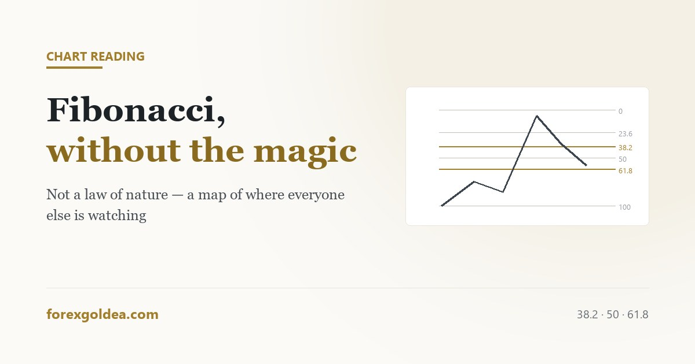

Fibonacci retracements, and what they really are

Fibonacci retracements attract more mysticism than any other tool on a chart, and the mysticism is the problem. The levels are not a law of nature that markets obey. They are a widely shared reference that a very large number of participants watch at the same time — which, it turns out, is a better reason to pay attention than the mathematics ever was.
In short a Fibonacci retracement divides a completed move into percentage levels — 23.6%, 38.2%, 50%, 61.8% and 78.6% — and marks where a pullback might pause. Draw it from the start of a move to its end, in the direction the move travelled. It works not because the ratios govern price but because enough traders watch the same levels that orders cluster there. On gold, the 38.2% and 61.8% levels see the most reaction, and 50% (not a Fibonacci number at all) is watched just as widely. Use it to find where a pullback may end, never as a reason to trade on its own.
What the tool actually does
Take a move that has clearly happened — a low to a high, say. The retracement tool divides that distance into percentages and draws a horizontal line at each. If gold ran from $2,300 to $2,400, the 38.2% level sits at roughly $2,362 and the 61.8% level at roughly $2,338.
That is the entire mechanic. There is no prediction inside it; it is arithmetic applied to a move that already finished. What the levels offer is a set of candidate prices where a pullback might find buyers again.
The ratios come from the Fibonacci sequence, where each number divided by the next approaches 0.618. The 50% level, which traders watch just as closely, is not from the sequence at all — it is simply the halfway point, and it is included because people watch it.
Why it works, which is not the reason usually given
The mystical explanation says these ratios appear in nature and therefore govern markets. That is a story, and it does not survive contact with the fact that the 50% level — the most watched of the group — is not a Fibonacci ratio.
The honest explanation is more useful. A very large number of traders, including institutional desks, draw the same tool on the same move and place orders around the same levels. Those orders cluster. Price reaching a cluster meets real buying or selling, and reacts.
This is the same reason the 200-period moving average matters more than its arithmetic deserves: shared attention is itself a market force.
Drawing it correctly, which most people do not
Three rules cover almost every mistake.
- Use a completed move. The tool measures a pullback against a swing that has finished. Drawing it on a move still in progress produces levels that shift every candle.
- Draw in the direction of travel. For an upward move, start at the low and drag to the high. Reversing this inverts the levels and produces a chart that looks plausible and means nothing.
- Use obvious swing points. The high and low a reasonable person would identify without effort. If you need to justify your choice of anchor, other traders have not chosen it either — and the whole value of the tool depends on other traders using the same one.
On gold, use wicks rather than closes for the anchors. Gold's wicks are long and widely visible, and the levels that get reacted to are the ones most participants can see.
Which levels matter on gold
| Level | How it behaves on XAU/USD |
|---|---|
| 23.6% | Shallow. Often reached during strong trends without meaning much. |
| 38.2% | Common pause point in a healthy trend. One of the two that matter. |
| 50% | Not a Fibonacci ratio, heavily watched anyway. Reacted to as often as the real ones. |
| 61.8% | The deepest pullback most trends survive. Beyond it, the trend is in question. |
| 78.6% | Deep. Reaching it usually means the move is over rather than pausing. |
A practical read: a pullback holding at 38.2% suggests strength, one reaching 61.8% suggests the move is tiring, and a break beyond 78.6% usually means what looked like a pullback was a reversal.
The mistake that makes it look magical
Look at any chart afterwards and you will find a Fibonacci level near almost every turn. This feels like confirmation. It is not.
The tool draws five levels across a move, and on gold those levels can sit $15–$25 apart. With five lines spread across the range, price turning somewhere near one of them is close to inevitable. Choosing the anchor points after the fact, once you can see where the turn happened, guarantees it.
The test that separates the two is simple: draw the levels before the pullback, from anchors you would have chosen at the time, and see whether price respects them. Doing that for a month is more informative than any amount of retrospective admiration.
Using it as part of something, not as the something
A Fibonacci level on its own is a horizontal line on a chart. What makes it worth acting on is agreement with something else:
- The level sits where price previously reacted anyway.
- It coincides with a moving average the market is watching.
- The trend it is pulling back within is still intact.
- Price shows something at the level — a rejection wick, a pause — rather than sliding through it.
And whatever the confluence, the stop still belongs beyond the level rather than on it, for the same reason it belongs beyond any obvious price: everyone else can see it too. That logic is set out in where a stop actually belongs.
Reader questions
How do I draw a Fibonacci retracement correctly?
Drag from the start of a completed move to its end, in the direction it travelled, using obvious swing highs and lows.
Which Fibonacci level is most important on gold?
38.2% and 61.8% see the most reaction, with 50% watched just as widely despite not being a Fibonacci number.
Does Fibonacci actually work in trading?
Yes, but because so many traders watch the same levels that orders cluster there — not because the ratios govern price.
Why is 50% included when it is not a Fibonacci number?
It is just the halfway point, included by convention. That it works as well as the real ratios shows why the tool works at all.
Why does Fibonacci look so accurate on past charts?
Five levels cover most of the range, and hindsight lets you pick flattering anchors. Draw them before the move to test honestly.
Can I trade using Fibonacci levels alone?
No. A level only earns a trade when something else agrees — prior structure, an intact trend, or visible rejection there.
Where this leaves you
Fibonacci retracements are a map of where other people are likely to act, dressed up as a law of nature. Stripped of the mysticism they remain genuinely useful: a shared set of prices where pullbacks often pause, most reliably at 38.2% and 61.8% on gold. Draw them from obvious anchors before the pullback rather than after it, require something else to agree, and the tool stops looking magical and starts being useful.
Affiliate disclosure: we earn a commission when you open and fund an account through our partner links, at no extra cost to you.